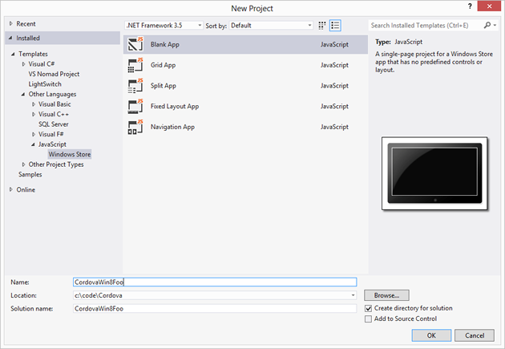

Windows 8 Platform Guide
This guide shows how to set up your SDK development environment to deploy Cordova apps for Windows 8. See the following for more detailed platform-specific information:
The command-line tools above refer to versions prior to Cordova 3.0. See The Command-Line Interface for information about the current interface.
Microsoft deprecated the name Metro-style apps in Windows 8 and Windows RT. MSDN now refers to this type of app as a Windows Store app, and this guide follows that convention. Also, in this guide Windows 8 signifies both Windows 8 and Windows RT.
Requirements
Windows 8
Visual Studio 2012 Professional or better, or Visual Studio 2012 Express for Windows 8
Follow the instructions at windowsstore.com to submit your app to Windows Store.
Install SDK and Cordova
Set up your preferred variant of Visual Studio 2012. All of the product's paid versions (Professional, etc.) let you build Windows Store apps. You need Express for Windows 8 to build Windows Store apps using the Express editions.
Download and extract the latest copy of
Cordova.
These instuctions apply to the lib\windows-8 subdirectory.
Set up a New Project
You can already build Windows 8 apps using the HTML/JavaScript track available in Windows Store apps. Use Cordova in Windows Store apps to expose the same APIs as on other Cordova-supported platforms.
Open Visual Studio 2012 and choose New Project.
-
Select Installed → Template → Other Languages → JavaScript → Windows Store from the tree, and then Blank App from the projects list. Enter whatever project name you like, such as
CordovaWin8Fooas in this example:
-
Microsoft continues to use
default.htmlas the default home page, but most web developers useindex.html. It's a good idea to do so, at least to match other platforms you're likely working on. To fix this, in Solution Explorer rename thedefault.htmlfile toindex.html. Then double-click thepackage.appxmanifestfile and change the Start page value toindex.html: To include
cordova.jsin your project, right-click on thejsdirectory in Solution Explorer and select Add → New Item. Locate thecordova.jsfile in thelib\windows-8directory.-
Edit the code for
index.html. Add a reference tocordova.js. You can do this manually, or by dragging the file from Solution Explorer. Add the following other dependencies to the app's home page:<!-- WinJS references --> <link href="//Microsoft.WinJS.1.0/css/ui-dark.css" rel="stylesheet" /> <script src="//Microsoft.WinJS.1.0/js/base.js"></script> <script src="//Microsoft.WinJS.1.0/js/ui.js"></script><!-- Cordova --> <script src="/js/cordova.js"></script> <!-- CordovaWin8Foo references --> <link href="/css/default.css" rel="stylesheet" /> <script src="/js/default.js"></script> -
Add a
devicereadyhandler to demonstrate Cordova is working:<body> <p>Content goes here</p> <script type="text/javascript"> console.log("Subscribing..."); document.addEventListener("deviceready", function () { navigator.notification.alert("The device is ready!"); }); </script> </body>
Test the Project
Run the project from Visual Studio. You'll see the message box appear:

That's it. You're now ready to build Windows Store apps with Cordova.